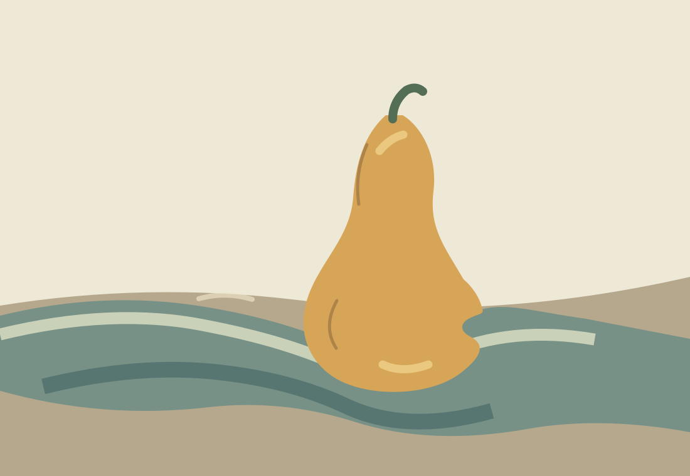

Vyt Aitken · cut-image still life · 15 October 2026
The Fold Waits at the Turn

A cloth edge takes the pear's turn for a moment. The fruit keeps its weight.
One pear, one cloth, one short transfer. Look first at the still life; stay a little longer at the place where its boundary changes hands.